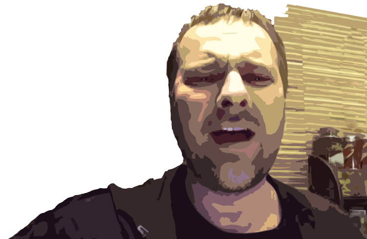

и СМЕХ, и НЕ ГРЕХ | Сергей Лукьянов
Мои рассказы - духовные, сатирические, душевные, но точно не плотские.
Рассказ Сергея Лукьянова "Не раскручивай землю"
Автор: Сергей Лукьянов
Раньше я не записывал свои коротенькие рассказики. Они у меня рождались и я игнорировал этот факт. Позже я решил их записывать, потому что со временем они забываются и исчезают. Некоторые - смешные. Они могут быть духовные, сатирические, душевные, но точно не плотские. Думаю, это один из моих инструментов. Это, как бы Иисус, идущий в тумане, в облаке, неясный, неяркий, веселый Иисус.

Мои рассказы рассчитаны на всех. Хочется, чтобы они нравились всем - верующим, неверующим, чтоб все понимали их, как притчи и чтобы они на шаг ближе человека к Иисусу делали, и верующих и не верующих. Мне хочется, чтобы люди засмеялись, улыбнулись, подумали немного, может где-то себя увидели, себя увидели, как философа, думающего о Боге.
Мои рассказы рождаются, как миниатюры, как видения. Иногда появляется просто какая-то фраза. Я чувствую, если за нее потянуть, получится целый рассказ. Я тяну за эту смешную фразу, или название. Порой, ты не знаешь, что ты вытянешь...
То, как Сергей читает, надо видеть! Смотрите здесь его рассказ "Сила лычки"
Другие публикации и интервью с Сергеем Лукьяновым смотрите здесь:
ВИДЕО:
"БОГ не ДАЛ МНЕ бросить ТЕАТРАЛЬНЫЙ..." ЧАСТЬ I и ЧАСТЬ II
СТАТЬИ: